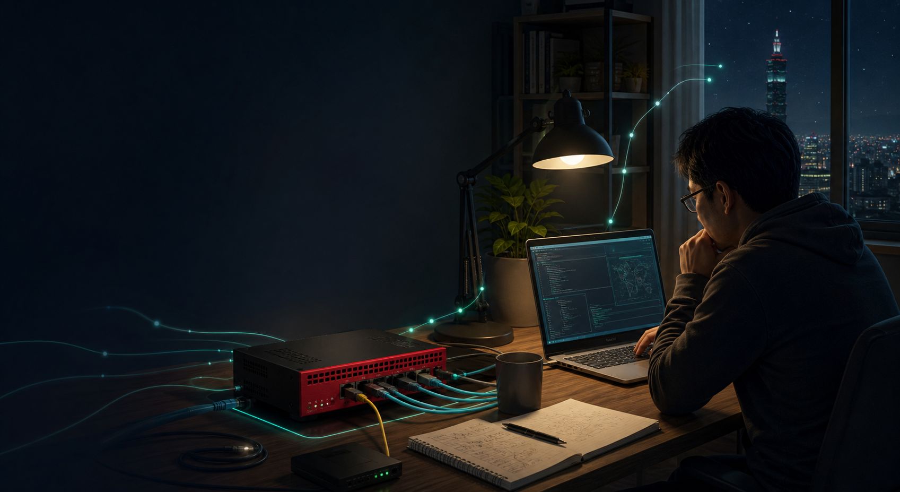

1
128 bit，8 段，16 進位
IPv4 是 4 段、32 bit；IPv6 是 8 段、128 bit。每段 16 bit，用 4 位十六進位剛好表示。

從 IPv4 老兵重新理解 IPv6
原本以為只是 GUI 點一點，結果一路查到 DHCPv6-PD、RA、SD-WAN Zone 與 IPv6 靜態路由。這是一份真的踩過坑、跑通之後整理出來的工程筆記。
Why This Took Time
IPv4 時代熟悉的 NAT、固定 IP、預設閘道直覺，在 IPv6 裡不會完全消失，但會換一種方式出現。這次真正麻煩的不是單一設定，而是 WAN、LAN、RA、防火牆政策、SD-WAN 與路由必須一起對上。
家裡的 FortiGate 60F 一直只有 IPv4 在跑。這次想說中華電信光世代 PPPoE 本來就有雙協定，乾脆順手把 IPv6 開起來。原本以為就是 GUI 勾一勾，結果從「WAN 端要不要 IPv6」一路查到「SD-WAN Zone 底層路由邏輯」。
如果你也是 IPv4 時代學網路、對 IPv6 一直有種「看得懂但不熟」的感覺，這份紀錄的價值不只是設定步驟，而是把整個判斷鏈補回來。
IPv6 Concepts
IPv6 看起來可怕，主要是十六進位位址很長。真正要先抓住的是位址結構、縮寫規則、Link-Local、SLAAC、DHCPv6-PD，以及「為什麼不靠 NAT」。
IPv4 是 4 段、32 bit；IPv6 是 8 段、128 bit。每段 16 bit，用 4 位十六進位剛好表示。
`::` 代表連續整段 0，實際補幾段要看已寫出的段數，而且一條位址只能出現一次。
前 64 bit 是網路 Prefix，後 64 bit 是裝置端 Interface ID。這跟 IPv4 常見 /24 直覺不同。
它不是異常，而是 IPv6 網路裡每個介面都會有的本地鏈路位址，RA 與鄰居探索都會用到。
用 RA 告訴 client Prefix，再讓 client 自己組位址；DNS 等資訊則可能由 RA/RDNSS 或 DHCPv6 補上。
ISP 不是只給你一個 IPv6，而是委派一段 Prefix，讓 LAN 端設備能拿到真正可路由的 IPv6 位址。
2001:b011:2009:fe05
前 64 bit：網路 Prefix
可以想成 IPv4 的網段概念，但通常用 /64 作為 LAN 基本單位。
59c6:384d:0c2d:d944
後 64 bit：Interface ID
可由 SLAAC 自動產生，也可在特定需求下做固定配置。
Topology
WAN 端 PPPoE 取得 IPv6 與委派 Prefix，LAN 端用 delegated prefix 發 RA，防火牆政策放行 IPv6，SD-WAN member 要有 gateway6，最後 static6 指向 SD-WAN Zone。
Implementation
以下以 `wan2` 作為 PPPoE 介面，`internal` 作為 LAN，且 `wan2` 已在 `virtual-wan-link` SD-WAN Zone 內。這裡保留可核對的 CLI 指令。
到 System → Feature Visibility，確認 IPv6 相關功能已啟用。否則 GUI 裡很多 IPv6 欄位不會出現。
WAN 端要向 HiNet 取得 Prefix Delegation。若第一次沒有協商成功，可先 disable 再 enable DHCPv6-PD 觸發重新協商。
config system interface
edit "wan2"
config ipv6
set ip6-mode pppoe
set ip6-allowaccess ping https http
set dhcp6-prefix-delegation enable
end
next
endLAN 端不能只是自己亂填 IPv6，而是要吃 WAN 端拿到的 delegated prefix。這裡 IAID 要跟 WAN 端實際 DHCPv6-PD 的 IAID 對上。
config system interface
edit "internal"
config ipv6
set ip6-mode delegated
set ip6-upstream-interface "wan2"
set ip6-subnet ::1/64
set ip6-send-adv enable
set ip6-max-interval 30
set ip6-min-interval 10
config ip6-delegated-prefix-list
edit 1
set upstream-interface "wan2"
set autonomous-flag enable
set onlink-flag enable
set subnet ::/64
next
end
end
next
endFortiOS 的 IPv4 / IPv6 policy 是分開的。IPv4 policy 放行不代表 IPv6 也放行，而且 IPv6 不要開 NAT。
config firewall policy
edit <policy-id>
set name "SD-WAN-IPv6"
set srcintf "internal"
set dstintf "virtual-wan-link"
set action accept
set srcaddr6 "all"
set dstaddr6 "all"
set schedule "always"
set service "ALL"
next
end這是這次卡最久的一關。wan2 在 SD-WAN Zone 裡時，IPv6 也需要讓 SD-WAN member 知道 gateway6，通常會是 HiNet BRAS 的 link-local 位址。
diagnose sniffer packet ppp2 "icmp6 and ip6[40]==134" 4 1
config system sdwan
config members
edit <wan2-member-id>
set gateway6 fe80::6aab:9ff:fe31:c01
next
end
end既然流量要走 SD-WAN Zone，IPv6 default route 也要指到 `virtual-wan-link`，不要直接寫死到 `wan2`。
config router static6
edit 1
set sdwan-zone "virtual-wan-link"
next
enddiagnose ipv6 address list
diagnose firewall proute6 list
get router info6 kernel
execute ping6 2606:4700:4700::1111LAN 端 Windows 再用 `ipconfig /all` 檢查是否取得 `2001:...` 位址，最後用 test-ipv6.com 驗證。
Debug Record
這篇最有價值的不是「最後設定長什麼樣」，而是知道卡住時應該查哪一層，以及怎麼判斷問題不在你原本以為的地方。
Final State
這張表不是取代完整設定，而是讓你快速確認該看的鏈路都有對上。
| 設定項目 | 值 / 判斷 |
|---|---|
| WAN 介面 | `wan2`，PPPoE 撥號介面。 |
| IPv6 取得方式 | PPPoE + DHCPv6 Prefix Delegation。 |
| LAN 介面 | `internal`，使用 delegated prefix 並發送 RA。 |
| Delegated Prefix IAID | 依 WAN 端實際 DHCPv6-PD IAID 對應；本次案例為 `6`。 |
| RA 發送間隔 | 本次調整為 10～30 秒，方便測試與快速收斂。 |
| LAN prefix flag | Autonomous flag / Onlink flag 需要正確啟用。 |
| 防火牆政策 | 新增獨立 IPv6 policy，`srcaddr6 all` → `dstaddr6 all`，不開 NAT。 |
| SD-WAN wan2 member | 補上 IPv6 gateway6，通常是 HiNet BRAS link-local 位址。 |
| IPv6 default route | `static6` 指向 `virtual-wan-link` SD-WAN Zone。 |
| 驗證 | `ping6`、`proute6`、kernel route、LAN client `ipconfig /all`、test-ipv6.com。 |
Afterthought
真正要補起來的是整條鏈：PPPoE、DHCPv6-PD、IAID、RA、SLAAC、防火牆政策、SD-WAN member、IPv6 default route。只要其中一段沒有對上，表面症狀可能會讓你誤判問題在完全不同的地方。
IPv4 跟 IPv6 應該還會共存很長一段時間。與其把 IPv6 當成一套陌生系統，不如把它理解成「網路位址與路由邏輯變得更直接，但中間協調環節更多」。